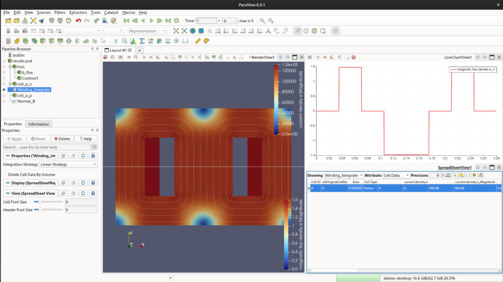
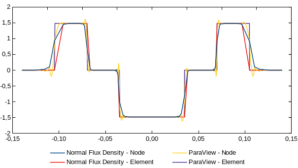

Designing a 2D Transformer Core: Mastering the Sif file
In our last series, we covered the step-by-step of how to model a simple EI core and simulate it using ElmerFEM. Due to the limitations of the ElmerGUI, we soon enough face some limitations.
In this post, we will follow some basics of the .sif file and, later, we will compare it with the ElmerGUI generated one.
Before we start, let’s consider that you already generated your .unv file and you are ready for a new model design. Our first suggestion was to open ElmerGUI and do everything from there. Now, we follow a different approach. Let’s try to do it using your preferable text editor. I will use VSCodium for that.
ElmerGrid
The first thing we need to do is convert the .unv file to Elmer format. To perform that, we use ElmerGrid.
It will generate a lot of files as follows:
If you look inside the .sif file, you will notice that now it uses the same name that you created in FreeCAD. That one will help us a lot.
Now, we fill out the rest.
Sif Editing
Let’s break the sif editing into different parts. The first one is the variables.
MATC
MATC is a library for the numerical evaluation of mathematical expressions. Here I first define the important variables for my simulation. It must appear as the very first thing in the .sif file.
Headers, Simulation and Constants
For headers and simulation, just use the default of ElmerGUI. Don’t forget to add Coordinate Scaling if you need it.
Header
CHECK KEYWORDS Warn
Mesh DB "." "."
Include Path ""
Results Directory ""
End
Simulation
Max Output Level = 5
Coordinate System = Cartesian
Coordinate Mapping(3) = 1 2 3
Simulation Type = Steady state
Steady State Max Iterations = 1
Output Intervals(1) = 1
! Solver Input File = case.sif
Coordinate Scaling = Real 0.001
End
Constants
Gravity(4) = 0 -1 0 9.82
Stefan Boltzmann = 5.670374419e-08
Permittivity of Vacuum = 8.85418781e-12
Permeability of Vacuum = 1.25663706e-6
Boltzmann Constant = 1.380649e-23
Unit Charge = 1.6021766e-19
EndEquation
Now we follow the order of Bodies, Solvers, Equation, Materials, Body Force and Boundary Condition.
We will skip the Bodies for now and go directly to Equation.
The solvers must be defined before the equation definition.
Solver 1
Those are default exported from ElmerGUI.
Solver 1
Equation = MgDyn2D
Variable = Potential
Procedure = "MagnetoDynamics2D" "MagnetoDynamics2D"
Exec Solver = Always
Optimize Bandwidth = True
Steady State Convergence Tolerance = 1.0e-5
Nonlinear System Convergence Tolerance = 1.0e-7
Nonlinear System Max Iterations = 20
Nonlinear System Newton After Iterations = 3
Nonlinear System Newton After Tolerance = 1.0e-3
Nonlinear System Relaxation Factor = 1
Linear System Solver = Iterative
Linear System Iterative Method = BiCGStab
Linear System Max Iterations = 500
Linear System Convergence Tolerance = 1.0e-10
BiCGstabl polynomial degree = 2
Linear System Preconditioning = ILU0
Linear System Abort Not Converged = False
Linear System Residual Output = 10
EndSolver 2
Those are also default, exported from ElmerGUI.
Solver 2
Equation = MgDynPost
Procedure = "MagnetoDynamics" "MagnetoDynamicsCalcFields"
Target Variable = Potential
Exec Solver = Always
Steady State Convergence Tolerance = 1.0e-5
Linear System Solver = Iterative
Linear System Iterative Method = BiCGStab
Linear System Max Iterations = 500
Linear System Convergence Tolerance = 1.0e-10
Linear System Preconditioning = ILU0
Calculate Magnetic Field Strength = Logical True
Calculate Magnetic Flux Density = Logical True
Calculate Current Density = Logical True
EndSolver 3
For solver 3, we just add more post-processing features. We use Vtu Part Collection. This will create separate results improving Paraview post-processing.
Materials
We add Air and Iron materials, however, we add non-linearity with an H-B Curve.
Material 1
Name = "Air (room temperature)"
Heat Conductivity = 0.0257
Relative Permeability = 1.00000037
Viscosity = 1.983e-5
Heat expansion Coefficient = 3.43e-3
Density = 1.205
Relative Permittivity = 1.00059
Sound speed = 343.0
Heat Capacity = 1005.0
End
Material 2
Name = "Iron (generic)"
Sound speed = 5000.0
! Relative Permeability = 4000
H-B Curve = Variable "dummy"
Real Cubic
Include "hb_iron.txt"
End
Poisson ratio = 0.29
Density = 7870.0
Heat Capacity = 449.0
Heat Conductivity = 80.2
Youngs modulus = 193.053e9
Electric Conductivity = 10.30e6
Heat expansion Coefficient = 11.8e-6
EndPlease, notice that now I have included a .txt file with the H-B curve data. The correct path to the file must be addressed.
0 0
0.05 19.96533
0.1 29.906288
0.15 36.398771
0.2 41.371669
0.25 45.590262
0.3 49.424859
0.35 53.08228
0.4 56.692664
0.45 60.347374
0.5 64.117637
0.55 68.064755
0.6 72.246371
0.65 76.720886
0.7 81.551123
0.75 86.807959
0.8 92.574503
0.85 98.95152
0.9 106.065047
0.95 114.077777
1 123.206911
1.05 133.753385
1.1 146.151738
1.15 161.058668
1.2 179.516634
1.25 203.267945
1.3 235.379748
1.35 281.524948
1.4 352.648412
1.45 470.426179
1.5 677.451541
1.55 1051.068036
1.6 1703.275165
1.65 2726.517959
1.7 4137.981052
1.75 5832.619704
1.8 7939.55294
1.85 10565.294335
1.9 13843.912965
1.95 17970.359698
2 23423.776432
2.05 32234.32596
2.1 51366.778967
2.15 84577.843501
2.2 121162.493322
2.25 160127.812767
2.3 202470.282245Body force
Now we add current to the windings. We added the -distribute flag as presented in the source code.
Body Force 1
Name = "Circuit_A"
Current Density = -distribute $ NI
! Current Density = $ J
End
Body Force 2
Name = "Circuit_a"
Current Density = -distribute $ -NI
! Current Density = $ -J
End
Body Force 3
Name = "Circuit_b"
Current Density = Real 0.0 ! $ NI
End
Body Force 4
Name = "Circuit_B"
Current Density = Real 0.0 ! $ -NI
EndZero boundary
Lastly, we add the zero boundary condition.
Bodies
Now, just add equation, material and body forces to the target bodies.
Body 1
Name = Air
Equation = 1
Material = 1
End
Body 2
Name = Iron_Faces
Equation = 1
Material = 2
End
Body 3
Name = coil_a_minus_Faces
Equation = 1
Material = 1
Body Force = 1
End
Body 4
Name = coil_a_plus_Faces
Equation = 1
Material = 1
Body Force = 2
End
Body 5
Name = coil_b_minus_Faces
Equation = 1
Material = 1
Body Force = 3
End
Body 6
Name = coil_b_plus_Faces
Equation = 1
Material = 1
Body Force = 4
EndThe complete .sif file is presented bellow.
$ N = 217
$ I = 0.74
$ NI = N*I
$ A_coil = 0.035 * 0.07
$ J = N * I / A_coil
Header
CHECK KEYWORDS Warn
Mesh DB "." "."
Include Path ""
Results Directory ""
End
Simulation
Max Output Level = 5
Coordinate System = Cartesian
Coordinate Mapping(3) = 1 2 3
Simulation Type = Steady state
Steady State Max Iterations = 1
Output Intervals(1) = 1
! Solver Input File = case.sif
Coordinate Scaling = Real 0.001
End
Constants
Gravity(4) = 0 -1 0 9.82
Stefan Boltzmann = 5.670374419e-08
Permittivity of Vacuum = 8.85418781e-12
Permeability of Vacuum = 1.25663706e-6
Boltzmann Constant = 1.380649e-23
Unit Charge = 1.6021766e-19
End
!------ Skeleton for body section -----
Body 1
Name = Air
Equation = 1
Material = 1
End
Body 2
Name = Iron_Faces
Equation = 1
Material = 2
End
Body 3
Name = coil_a_minus_Faces
Equation = 1
Material = 1
Body Force = 1
End
Body 4
Name = coil_a_plus_Faces
Equation = 1
Material = 1
Body Force = 2
End
Body 5
Name = coil_b_minus_Faces
Equation = 1
Material = 1
Body Force = 3
End
Body 6
Name = coil_b_plus_Faces
Equation = 1
Material = 1
Body Force = 4
End
Solver 1
Equation = MgDyn2D
Variable = Potential
Procedure = "MagnetoDynamics2D" "MagnetoDynamics2D"
Exec Solver = Always
Optimize Bandwidth = True
Steady State Convergence Tolerance = 1.0e-5
Nonlinear System Convergence Tolerance = 1.0e-7
Nonlinear System Max Iterations = 20
Nonlinear System Newton After Iterations = 3
Nonlinear System Newton After Tolerance = 1.0e-3
Nonlinear System Relaxation Factor = 1
Linear System Solver = Iterative
Linear System Iterative Method = BiCGStab
Linear System Max Iterations = 500
Linear System Convergence Tolerance = 1.0e-10
BiCGstabl polynomial degree = 2
Linear System Preconditioning = ILU0
Linear System Abort Not Converged = False
Linear System Residual Output = 10
End
Solver 2
Equation = MgDynPost
Procedure = "MagnetoDynamics" "MagnetoDynamicsCalcFields"
Target Variable = Potential
Exec Solver = Always
Steady State Convergence Tolerance = 1.0e-5
Linear System Solver = Iterative
Linear System Iterative Method = BiCGStab
Linear System Max Iterations = 500
Linear System Convergence Tolerance = 1.0e-10
Linear System Preconditioning = ILU0
Calculate Magnetic Field Strength = Logical True
Calculate Magnetic Flux Density = Logical True
Calculate Current Density = Logical True
End
Solver 3
Exec Solver = After saving
Equation = "ResultOutput"
Procedure = "ResultOutputSolve" "ResultOutputSolver"
Output File Name = "results"
Vtu Format = Logical True
Vtu Part Collection = Logical True
Vtu Multiblock = Logical True
End
Equation 1
Name = "MgDyn2D"
Active Solvers(3) = 1 2 3
End
Material 1
Name = "Air (room temperature)"
Heat Conductivity = 0.0257
Relative Permeability = 1.00000037
Viscosity = 1.983e-5
Heat expansion Coefficient = 3.43e-3
Density = 1.205
Relative Permittivity = 1.00059
Sound speed = 343.0
Heat Capacity = 1005.0
End
Material 2
Name = "Iron (generic)"
Sound speed = 5000.0
! Relative Permeability = 4000
H-B Curve = Variable "dummy"
Real Cubic
Include "bh_iron.txt"
End
Poisson ratio = 0.29
Density = 7870.0
Heat Capacity = 449.0
Heat Conductivity = 80.2
Youngs modulus = 193.053e9
Electric Conductivity = 10.30e6
Heat expansion Coefficient = 11.8e-6
End
Body Force 1
Name = "Circuit_A"
Current Density = -distribute $ NI
! Current Density = $ J
End
Body Force 2
Name = "Circuit_a"
Current Density = -distribute $ -NI
! Current Density = $ -J
End
Body Force 3
Name = "Circuit_b"
Current Density = Real 0.0 ! $ NI
End
Body Force 4
Name = "Circuit_B"
Current Density = Real 0.0 ! $ -NI
End
Boundary Condition 1
Target Boundaries(1) = 19
Name = zerobound_Edges
Name = "Zero"
Potential = Real 0.0
EndSimulation
Now we run the simulation.
Paraview
Now, inside paraview, you will notice a .vtu file. It has now different blocks that can be evaluated in paraview. It will be easier for post-processing. For now, let’s just see the expected result.
The total magnetic length is 420mm.
\[H = \frac{N \cdot I}{l_m} = \frac{160.6}{0.385} = 417.17~\text{A/m}\]
Lookig the HB curve, that gives us aroung 1.43T.

Fig. 1 - Elmer post-processing using ParaView.
The surface current integral shows 160.58 A.e and 1.48 T of normal flux density.
Post-processing
One last thing before we close this post, we can also perform post-processing natively using Elmer. Sometimes it is better to evaluate outside ParaView. For us, it is better just to compare both results. We are going to add plot over line flux, calculate the coil’s Area, and the Potential integral (Flux Linkage). With current and flux, we get inductance.
To achieve this, we need to add two internal solvers to our .sif file: SaveLine and SaveScalars.
Plot Over Line (SaveLine)
We add a 4th solver to extract data across a specific gap line:

Area and Flux Linkage (SaveScalars)
Instead of trying to integrate the current directly (which yields zero in a steady-state 2D model due to zero conductivity), we integrate the geometric Volume (Area in 2D) and the Magnetic Vector Potential (\(A\_z\)) over the coil surface:
Solver 5
Equation = "SaveScalars"
Procedure = "SaveData" "SaveScalars"
Filename = "integrais_bobina.dat"
File Append = Logical False
! 1. Area validation
Variable 1 = Coordinate 1
Operator 1 = volume
! 2. Potential Integral for Flux Linkage
Variable 2 = Potential
Operator 2 = int
! Apply exactly to the bodies marked with this tag
Mask Name 1 = "Integrar Corrente"
Mask Name 2 = "Integrar Corrente"
EndDon’t forget to update your equation to include the new solvers (Active Solvers(5) = 1 2 3 4 5) and to add the mask Integrar Corrente = Logical True to the Body blocks representing your coils.The results are exported directly to standard text files (.dat), which are extremely friendly for pipelines using Python or Julia. With the integrated Potential (IAI_A) and the known coil Area (AcoilA_{coil}), the Inductance (LL) is easily calculated by:
\[L = \frac{N}{I \cdot A_{coil}} \iint A_z \, dA\]
I’ve improved some parts. You can check the result here.